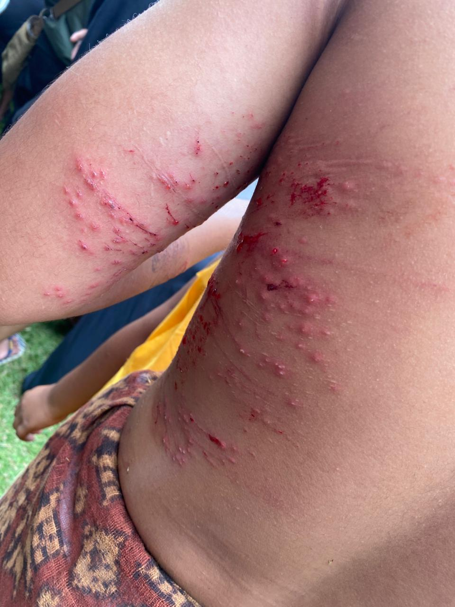
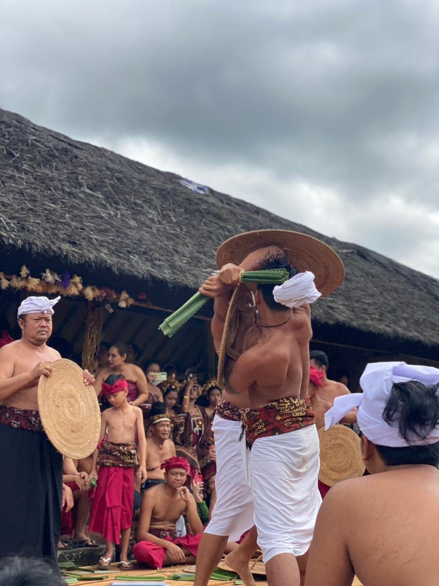
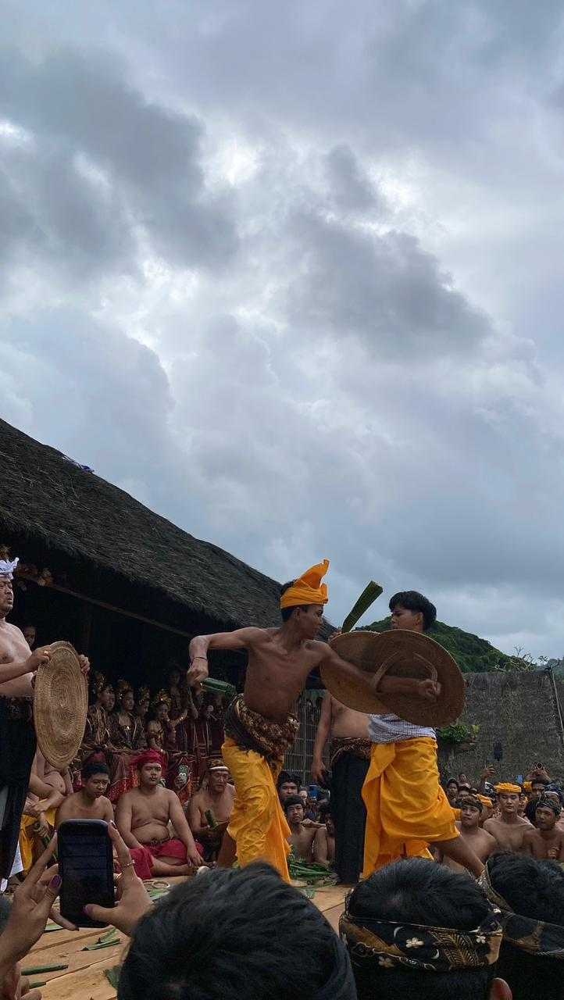

HONOR & BRAVERY
A legendary pandan leaf battle from Tenganan Village where courage, discipline, and ancestral pride come alive.
Participants face each other using thorny pandan leaves as symbolic weapons and woven shields for protection.
Although intense and physical, Mekare-Kare is not about anger. It is a ritual of honor, bravery, and respect.
This tradition is deeply connected to Tenganan Pegringsingan, one of Bali Aga’s oldest indigenous villages.
Traditional clothing, village atmosphere, music, and dramatic duels make it one of Bali’s most unforgettable ceremonies.
Mekare-Kare is usually held during the Usaba Sambah festival in Tenganan.
It often takes place around June, depending on the traditional village calendar.
Check announcements from Tenganan Village or recent celebration dates each year.
Tenganan Pegringsingan Village, Karangasem, East Bali.
Space can be limited, so arrive before the ritual begins.
This is a sacred village tradition with deep identity and meaning.
The action and traditional costumes create powerful photographs.
Tenganan is also famous for architecture and traditional double ikat weaving.


